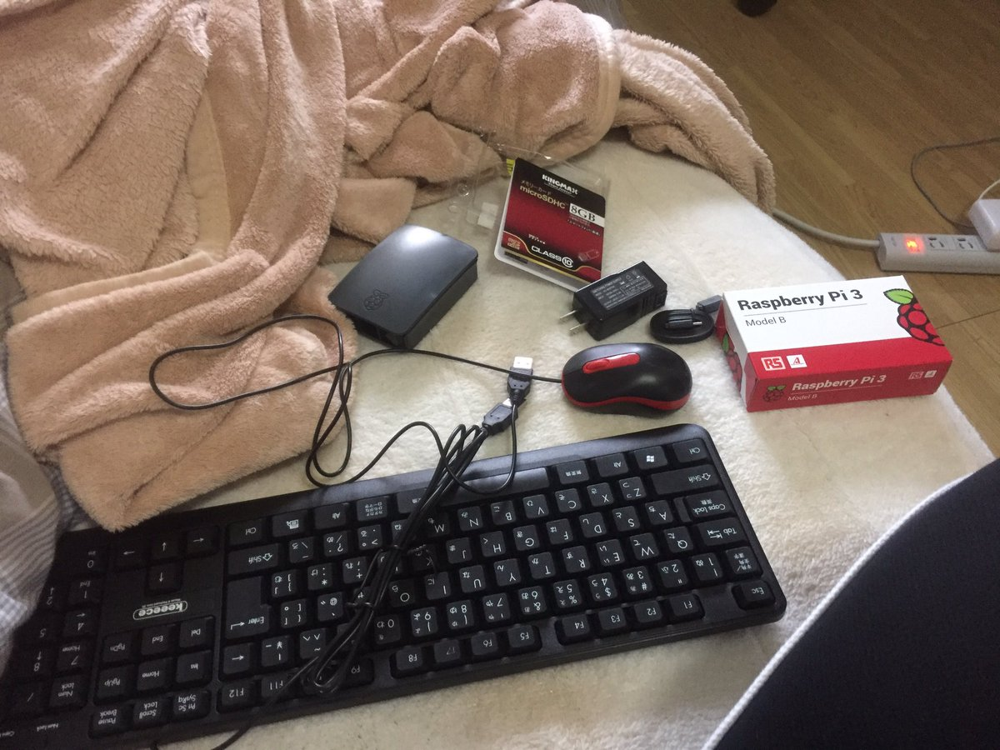
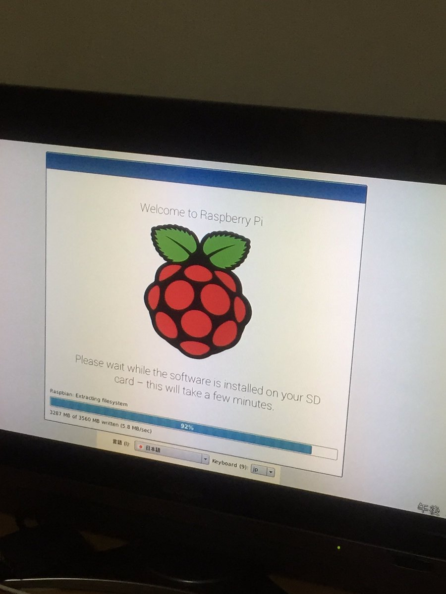

秋葉原にラズベリーパイを買いに行った話
注意:ラズベリーパイと言っても、ラズベリーのパイではありません...
何言ってんだこいつと思われるかもしれませんが、実際にRaspberry Piという名前のコンピュータがあるのです。
注意:ラズベリーパイと言っても、ラズベリーのパイではありません...
それを買って何をするのかというと、一番に考えているのは友人たちとごく偶にやっているマインクラフトというゲームのサーバーを建てることです。一つのワールドで一緒にプレイするときにワールドのデータを持っている人がパソコンを起動し、サーバーを建てるという作業があるのですが、ちょっとだけやりたいなぁってときにいちいちその人に言ってサーバー建ててもらうのも面倒ですし、ワールドのデータ送ってというのも面倒なのでそれをやってくれる常駐のコンピュータがあると便利かなと思いました。まぁ、それでなくても電流を流すことができたり、linuxに慣れたり、色々用途はあるんですけどね。
とりあえず、ラズパイとその周辺機器を購入するために私は何が必要なのか調べました。
- Raspberry Pi本体
- 本体ケース
- マウス
- キーボード
- microSD
- usbケーブル type-microB
- usb電源アダプタ
- hdmiケーブル
やはりせっかく秋葉原まで来たんだから、いくつかお店を見て、一番安いところで買うことにしました。結局4軒回ったのですが、4軒目は全然安くなかっ(ry
こうやってしっかり調べ物をして、どこのお店をどのルートで回るか確認して、一番安いものを見つけるというのはなかなかどうして楽しいものがありますね。

↑戦利品
家に帰り、初期設定をしたあたりで何故かものすごく疲れ、結局寝てしまいました。これから色々いじって遊びたいと思います。

↑OSのインストール
さて、こんな感じでhtmlとか書けるようにしようかなとふと思い立ち、深夜に急に書き始めたブログですが 、ちょっとhtmlのサイト見たくらいでできるのはこの程度ですよね...。cssの入門サイトとかも見てきます...はい。まぁ、ブログとか全く柄じゃない人間ですが、始めた以上楽しめればいいかなと思います。内容や文章も特に大したことないですし、これからもうちょっと改善できればと思います。
それでは、またどこかで!
homeへ
homeへ